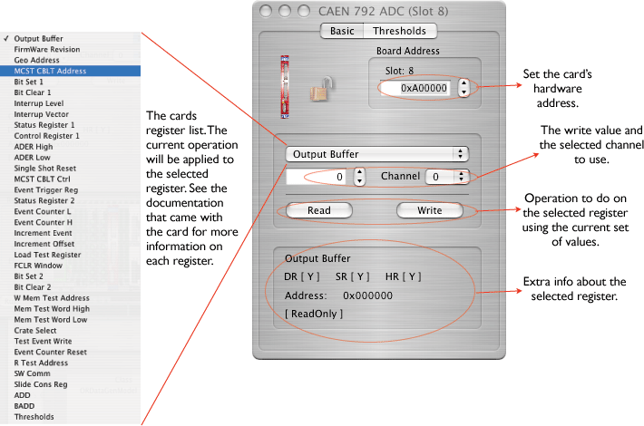
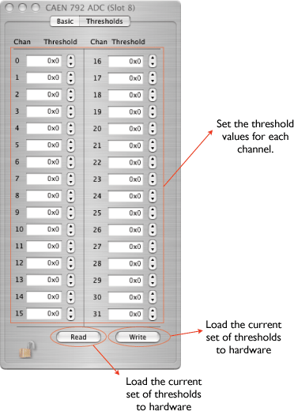

The Model V792 is a 1-unit wide VME 6U module housing 32 Charge-to-Digital Conversion channels with current integrating negative inputs. For each channel, the input charge is converted to a voltage level by a QAC (Charge to Amplitude Conversion) section. Input range is 0÷400 pC with 100 fC LSB.
The outputs of the QAC sections are multiplexed and subsequently converted by two fast 12-bit ADCs (5.7 µs for all channels). A sliding scale technique is employed to improve the differential non-linearity.
The Mod. V792 offers a 32 event buffer memory. The module works in A24/A32 mode; the data transfer occurs in D16, D32, BLT32/MBLT64 or CBLT32/CLT64 mode. Multicast commands also supported. Programmable zero and overflow suppression complete the features of the unit. The board is equipped with a special circuitry (live insertion) which allows the User to insert (remove) it into (from) the crate without switching the power off.
The V792 configuration icon looks like this: 

Thresholds can be set from the Basic dialog or from the Threshold dialog. Thresholds can also be set from the Hardware Wizard.

The data records for the CAEN cards is exactly as produced by the cards with the addition of a 32-bit header that 'wraps' the data for ORCA. It is a variable length record. The format is:
The data records for the CAEN cards is exactly as produced by the cards with the addition of a header that 'wraps' the data for ORCA. It is a variable length record. Only the long form is used. The format is:
version 2 format:
xxxx xxxx xxxx xxxx xxxx xxxx xxxx xxxx ^^^^ ^^^^ ^^^^ ^^-----------------------Object ID (from header) -----------------^^ ^^^^ ^^^^ ^^^^ ^^^^-n longs + 2 xxxx xxxx xxxx xxxx xxxx xxxx xxxx xxxx ^^^^ ^^^^-------------------------------spare ----------^^^^--------------------------crate ---------------^^^^---------------------card --------------------^^^^ ^^^^ ^^^^ ^^^^-spare n longs of data follow immediately. The format is as described in the card's documentation.version 1 (old format):
xxxx xxxx xxxx xxxx xxxx xxxx xxxx xxxx ^^^^ ^----------------------------------Object ID (from header) ----------^^^^--------------------------crate ---------------^^^^---------------------card --------------------^^^^ ^^^^ ^^^^ ^^^^-n bytes + 4 n bytes of data follow immediately. The format is as described in the card's documentation.